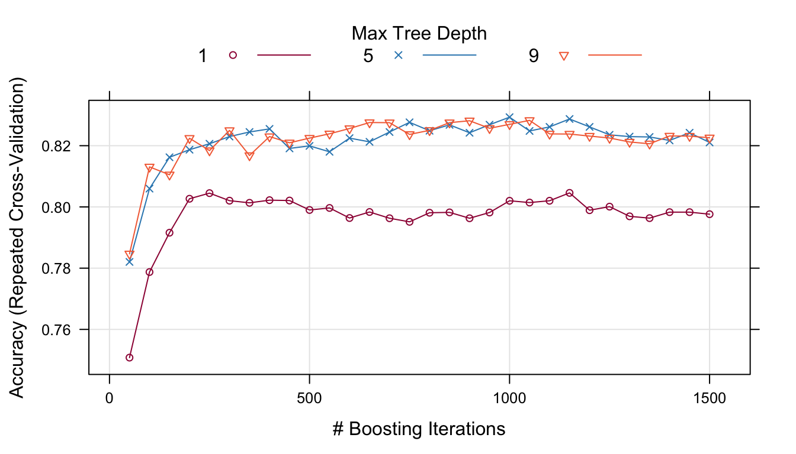
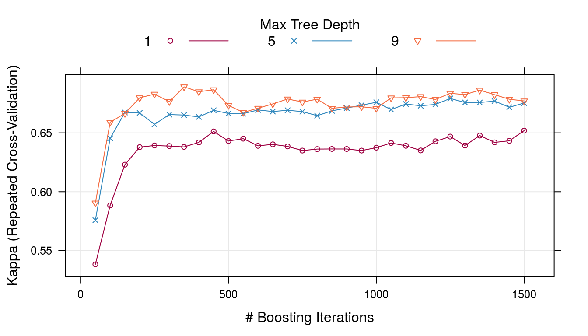
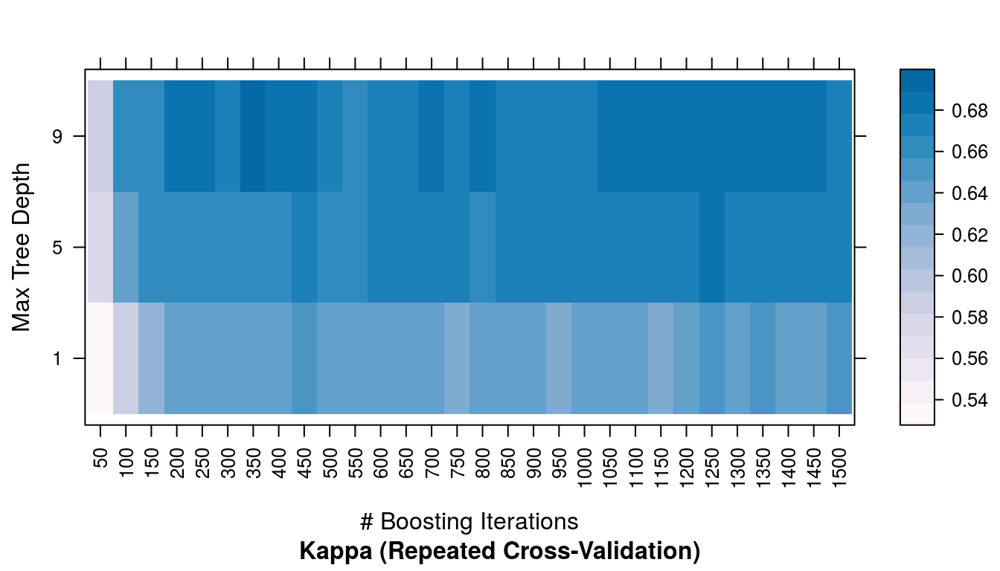
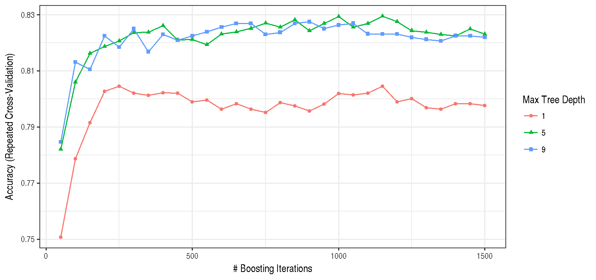
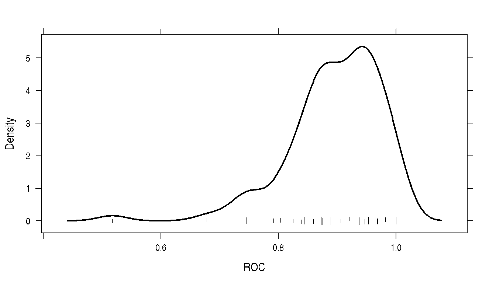
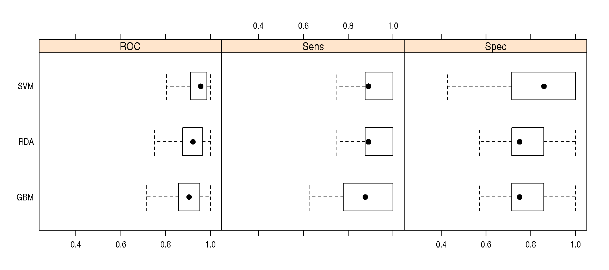
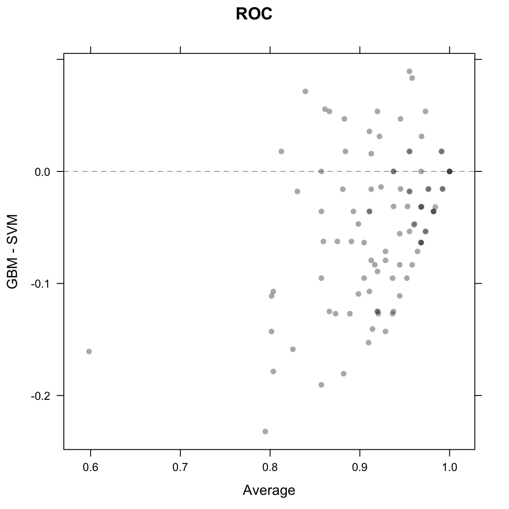
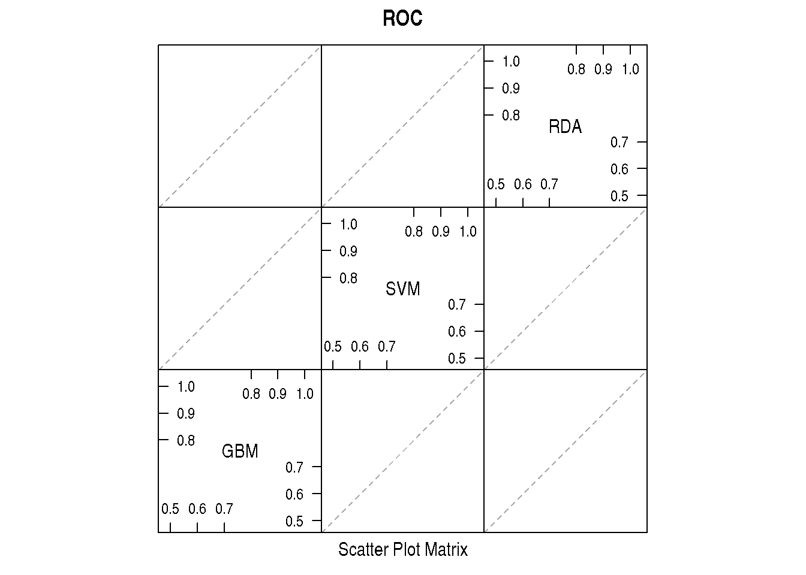
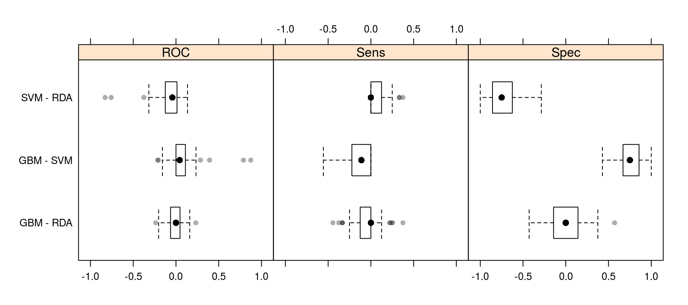
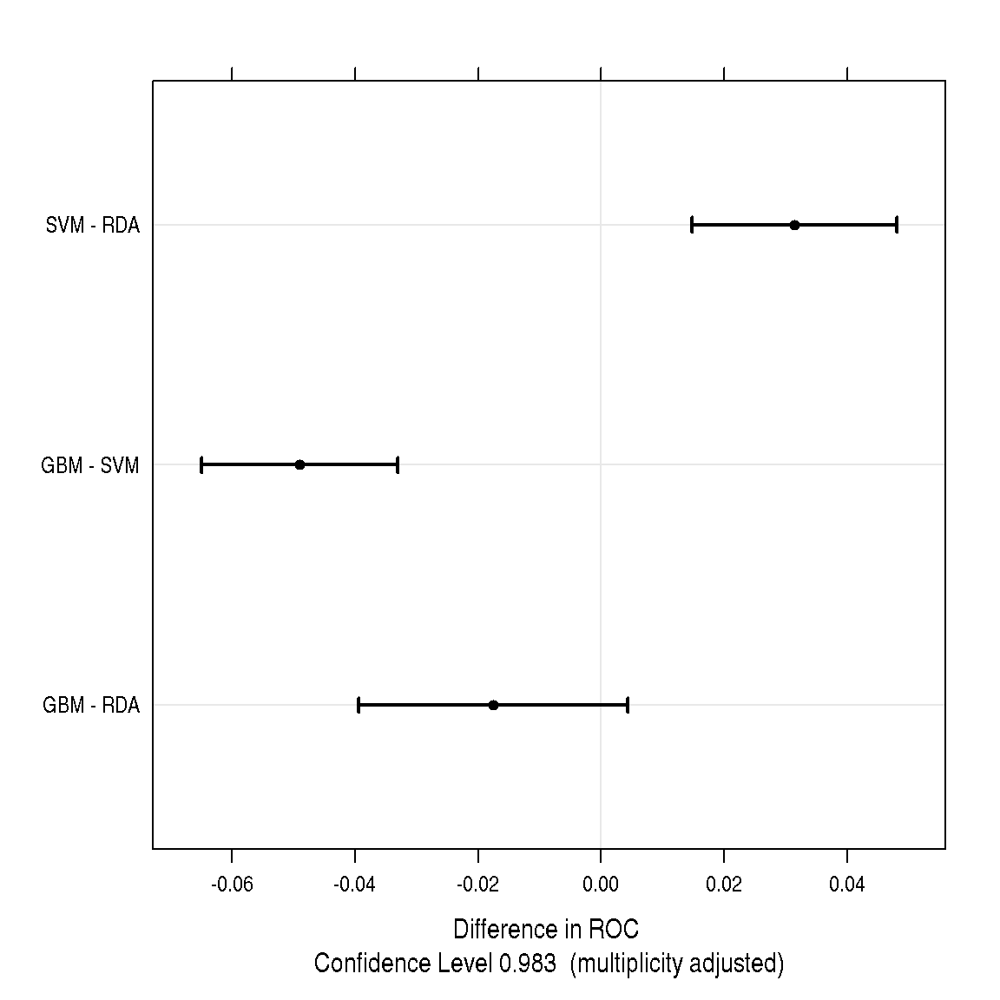

5 Model Training and Tuning
Contents
- Model Training and Parameter Tuning
- An Example
- Basic Parameter Tuning
- Notes on Reproducibility
- Customizing the Tuning Process
- Pre-Processing Options
- Alternate Tuning Grids
- Plotting the Resampling Profile
- The
trainControlFunction - Alternate Performance Metrics
- Choosing the Final Model
- Extracting Predictions and Class Probabilities
- Exploring and Comparing Resampling Distributions
- Within-Model
- Between-Models
- Fitting Models Without Parameter Tuning
5.1 Model Training and Parameter Tuning
The caret package has several functions that attempt to streamline the model building and evaluation process.
The train function can be used to
- evaluate, using resampling, the effect of model tuning parameters on performance
- choose the “optimal” model across these parameters
- estimate model performance from a training set
First, a specific model must be chosen. Currently, 238 are available using caret; see train Model List or train Models By Tag for details. On these pages, there are lists of tuning parameters that can potentially be optimized. User-defined models can also be created.
The first step in tuning the model (line 1 in the algorithm below is to choose a set of parameters to evaluate. For example, if fitting a Partial Least Squares (PLS) model, the number of PLS components to evaluate must be specified.

Once the model and tuning parameter values have been defined, the type of resampling should be also be specified. Currently, k-fold cross-validation (once or repeated), leave-one-out cross-validation and bootstrap (simple estimation or the 632 rule) resampling methods can be used by train. After resampling, the process produces a profile of performance measures is available to guide the user as to which tuning parameter values should be chosen. By default, the function automatically chooses the tuning parameters associated with the best value, although different algorithms can be used (see details below).
5.2 An Example
The Sonar data are available in the mlbench package. Here, we load the data:
library(mlbench)
data(Sonar)
str(Sonar[, 1:10])## 'data.frame': 208 obs. of 10 variables:
## $ V1 : num 0.02 0.0453 0.0262 0.01 0.0762 0.0286 0.0317 0.0519 0.0223 0.0164 ...
## $ V2 : num 0.0371 0.0523 0.0582 0.0171 0.0666 0.0453 0.0956 0.0548 0.0375 0.0173 ...
## $ V3 : num 0.0428 0.0843 0.1099 0.0623 0.0481 ...
## $ V4 : num 0.0207 0.0689 0.1083 0.0205 0.0394 ...
## $ V5 : num 0.0954 0.1183 0.0974 0.0205 0.059 ...
## $ V6 : num 0.0986 0.2583 0.228 0.0368 0.0649 ...
## $ V7 : num 0.154 0.216 0.243 0.11 0.121 ...
## $ V8 : num 0.16 0.348 0.377 0.128 0.247 ...
## $ V9 : num 0.3109 0.3337 0.5598 0.0598 0.3564 ...
## $ V10: num 0.211 0.287 0.619 0.126 0.446 ...The function createDataPartition can be used to create a stratified random sample of the data into training and test sets:
library(caret)
set.seed(998)
inTraining <- createDataPartition(Sonar$Class, p = .75, list = FALSE)
training <- Sonar[ inTraining,]
testing <- Sonar[-inTraining,]We will use these data illustrate functionality on this (and other) pages.
5.3 Basic Parameter Tuning
By default, simple bootstrap resampling is used for line 3 in the algorithm above. Others are available, such as repeated K-fold cross-validation, leave-one-out etc. The function trainControl can be used to specifiy the type of resampling:
fitControl <- trainControl(## 10-fold CV
method = "repeatedcv",
number = 10,
## repeated ten times
repeats = 10)More information about trainControl is given in a section below.
The first two arguments to train are the predictor and outcome data objects, respectively. The third argument, method, specifies the type of model (see train Model List or train Models By Tag). To illustrate, we will fit a boosted tree model via the gbm package. The basic syntax for fitting this model using repeated cross-validation is shown below:
set.seed(825)
gbmFit1 <- train(Class ~ ., data = training,
method = "gbm",
trControl = fitControl,
## This last option is actually one
## for gbm() that passes through
verbose = FALSE)
gbmFit1## Stochastic Gradient Boosting
##
## 157 samples
## 60 predictors
## 2 classes: 'M', 'R'
##
## No pre-processing
## Resampling: Cross-Validated (10 fold, repeated 10 times)
## Summary of sample sizes: 141, 141, 142, 141, 141, 142, ...
## Resampling results across tuning parameters:
##
## interaction.depth n.trees Accuracy Kappa
## 1 50 0.7876495 0.5712306
## 1 100 0.7957794 0.5867732
## 1 150 0.8140441 0.6235694
## 2 50 0.8073676 0.6101031
## 2 100 0.8158211 0.6263183
## 2 150 0.8244608 0.6441406
## 3 50 0.8167843 0.6294107
## 3 100 0.8238211 0.6432910
## 3 150 0.8284510 0.6522968
##
## Tuning parameter 'shrinkage' was held constant at a value of 0.1
##
## Tuning parameter 'n.minobsinnode' was held constant at a value of 10
## Accuracy was used to select the optimal model using the largest value.
## The final values used for the model were n.trees = 150,
## interaction.depth = 3, shrinkage = 0.1 and n.minobsinnode = 10.For a gradient boosting machine (GBM) model, there are three main tuning parameters:
- number of iterations, i.e. trees, (called
n.treesin thegbmfunction) - complexity of the tree, called
interaction.depth - learning rate: how quickly the algorithm adapts, called
shrinkage - the minimum number of training set samples in a node to commence splitting (
n.minobsinnode)
The default values tested for this model are shown in the first two columns (shrinkage and n.minobsinnode are not shown beause the grid set of candidate models all use a single value for these tuning parameters). The column labeled “Accuracy” is the overall agreement rate averaged over cross-validation iterations. The agreement standard deviation is also calculated from the cross-validation results. The column “Kappa” is Cohen’s (unweighted) Kappa statistic averaged across the resampling results. train works with specific models (see train Model List or train Models By Tag). For these models, train can automatically create a grid of tuning parameters. By default, if p is the number of tuning parameters, the grid size is 3^p. As another example, regularized discriminant analysis (RDA) models have two parameters (gamma and lambda), both of which lie between zero and one. The default training grid would produce nine combinations in this two-dimensional space.
There are several notes regarding specific model behaviors for train. There is additional functionality in train that is described in the next section.
5.4 Notes on Reproducibility
Many models utilize random numbers during the phase where parameters are estimated. Also, the resampling indices are chosen using random numbers. There are two main ways to control the randomness in order to assure reproducible results.
- There are two approaches to ensuring that the same resamples are used between calls to
train. The first is to useset.seedjust prior to callingtrain. The first use of random numbers is to create the resampling information. Alternatively, if you would like to use specific splits of the data, theindexargument of thetrainControlfunction can be used. This is briefly discussed below. - When the models are created inside of resampling, the seeds can also be set. While setting the seed prior to calling
trainmay guarantee that the same random numbers are used, this is unlikely to be the case when parallel processing is used (depending which technology is utilized). To set the model fitting seeds,trainControlhas an additional argument calledseedsthat can be used. The value for this argument is a list of integer vectors that are used as seeds. The help page fortrainControldescribes the appropriate format for this option.
How random numbers are used is highly dependent on the package author. There are rare cases where the underlying model function does not control the random number seed, especially if the computations are conducted in C code. Also, please note that some packages load random numbers when loaded (directly or via namespace) and this may effect reproducibility.
5.5 Customizing the Tuning Process
There are a few ways to customize the process of selecting tuning/complexity parameters and building the final model.
5.5.1 Pre-Processing Options
As previously mentioned,train can pre-process the data in various ways prior to model fitting. The function preProcess is automatically used. This function can be used for centering and scaling, imputation (see details below), applying the spatial sign transformation and feature extraction via principal component analysis or independent component analysis.
To specify what pre-processing should occur, the train function has an argument called preProcess. This argument takes a character string of methods that would normally be passed to the method argument of the preProcess function. Additional options to the preProcess function can be passed via the trainControl function.
These processing steps would be applied during any predictions generated using predict.train, extractPrediction or extractProbs (see details later in this document). The pre-processing would not be applied to predictions that directly use the object$finalModel object.
For imputation, there are three methods currently implemented:
- k-nearest neighbors takes a sample with missing values and finds the k closest samples in the training set. The average of the k training set values for that predictor are used as a substitute for the original data. When calculating the distances to the training set samples, the predictors used in the calculation are the ones with no missing values for that sample and no missing values in the training set.
- another approach is to fit a bagged tree model for each predictor using the training set samples. This is usually a fairly accurate model and can handle missing values. When a predictor for a sample requires imputation, the values for the other predictors are fed through the bagged tree and the prediction is used as the new value. This model can have significant computational cost.
- the median of the predictor’s training set values can be used to estimate the missing data.
If there are missing values in the training set, PCA and ICA models only use complete samples.
5.5.2 Alternate Tuning Grids
The tuning parameter grid can be specified by the user. The argument tuneGrid can take a data frame with columns for each tuning parameter. The column names should be the same as the fitting function’s arguments. For the previously mentioned RDA example, the names would be gamma and lambda. train will tune the model over each combination of values in the rows.
For the boosted tree model, we can fix the learning rate and evaluate more than three values of n.trees:
gbmGrid <- expand.grid(interaction.depth = c(1, 5, 9),
n.trees = (1:30)*50,
shrinkage = 0.1,
n.minobsinnode = 20)
nrow(gbmGrid)
set.seed(825)
gbmFit2 <- train(Class ~ ., data = training,
method = "gbm",
trControl = fitControl,
verbose = FALSE,
## Now specify the exact models
## to evaluate:
tuneGrid = gbmGrid)
gbmFit2## Stochastic Gradient Boosting
##
## 157 samples
## 60 predictors
## 2 classes: 'M', 'R'
##
## No pre-processing
## Resampling: Cross-Validated (10 fold, repeated 10 times)
## Summary of sample sizes: 141, 141, 142, 141, 141, 142, ...
## Resampling results across tuning parameters:
##
## interaction.depth n.trees Accuracy Kappa
## 1 50 0.77 0.54
## 1 100 0.80 0.59
## 1 150 0.81 0.62
## 1 200 0.82 0.64
## 1 250 0.82 0.64
## 1 300 0.82 0.64
## : : : :
## 9 1350 0.85 0.69
## 9 1400 0.84 0.68
## 9 1450 0.84 0.68
## 9 1500 0.84 0.68
##
## Tuning parameter 'shrinkage' was held constant at a value of 0.1
##
## Tuning parameter 'n.minobsinnode' was held constant at a value of 20
## Accuracy was used to select the optimal model using the largest value.
## The final values used for the model were n.trees = 350,
## interaction.depth = 9, shrinkage = 0.1 and n.minobsinnode = 20.Another option is to use a random sample of possible tuning parameter combinations, i.e. “random search”(pdf). This functionality is described on this page.
To use a random search, use the option search = "random" in the call to trainControl. In this situation, the tuneLength parameter defines the total number of parameter combinations that will be evaluated.
5.5.3 Plotting the Resampling Profile
The plot function can be used to examine the relationship between the estimates of performance and the tuning parameters. For example, a simple invokation of the function shows the results for the first performance measure:
trellis.par.set(caretTheme())
plot(gbmFit2) 
Other performance metrics can be shown using the metric option:
trellis.par.set(caretTheme())
plot(gbmFit2, metric = "Kappa")
Other types of plot are also available. See ?plot.train for more details. The code below shows a heatmap of the results:
trellis.par.set(caretTheme())
plot(gbmFit2, metric = "Kappa", plotType = "level",
scales = list(x = list(rot = 90)))
A ggplot method can also be used:
ggplot(gbmFit2) ## Warning: Ignoring unknown aesthetics: shape
There are also plot functions that show more detailed representations of the resampled estimates. See ?xyplot.train for more details.
From these plots, a different set of tuning parameters may be desired. To change the final values without starting the whole process again, the update.train can be used to refit the final model. See ?update.train
5.5.4 The trainControl Function
The function trainControl generates parameters that further control how models are created, with possible values:
method: The resampling method:"boot","cv","LOOCV","LGOCV","repeatedcv","timeslice","none"and"oob". The last value, out-of-bag estimates, can only be used by random forest, bagged trees, bagged earth, bagged flexible discriminant analysis, or conditional tree forest models. GBM models are not included (thegbmpackage maintainer has indicated that it would not be a good idea to choose tuning parameter values based on the model OOB error estimates with boosted trees). Also, for leave-one-out cross-validation, no uncertainty estimates are given for the resampled performance measures.numberandrepeats:numbercontrols with the number of folds in K-fold cross-validation or number of resampling iterations for bootstrapping and leave-group-out cross-validation.repeatsapplied only to repeated K-fold cross-validation. Suppose thatmethod = "repeatedcv",number = 10andrepeats = 3,then three separate 10-fold cross-validations are used as the resampling scheme.verboseIter: A logical for printing a training log.returnData: A logical for saving the data into a slot calledtrainingData.p: For leave-group out cross-validation: the training percentage- For
method = "timeslice",trainControlhas optionsinitialWindow,horizonandfixedWindowthat govern how cross-validation can be used for time series data. classProbs: a logical value determining whether class probabilities should be computed for held-out samples during resample.indexandindexOut: optional lists with elements for each resampling iteration. Each list element is the sample rows used for training at that iteration or should be held-out. When these values are not specified,trainwill generate them.summaryFunction: a function to computed alternate performance summaries.selectionFunction: a function to choose the optimal tuning parameters. and examples.PCAthresh,ICAcompandk: these are all options to pass to thepreProcessfunction (when used).returnResamp: a character string containing one of the following values:"all","final"or"none". This specifies how much of the resampled performance measures to save.allowParallel: a logical that governs whethertrainshould use parallel processing (if availible).
There are several other options not discussed here.
5.5.5 Alternate Performance Metrics
The user can change the metric used to determine the best settings. By default, RMSE, R2, and the mean absolute error (MAE) are computed for regression while accuracy and Kappa are computed for classification. Also by default, the parameter values are chosen using RMSE and accuracy, respectively for regression and classification. The metric argument of the train function allows the user to control which the optimality criterion is used. For example, in problems where there are a low percentage of samples in one class, using metric = "Kappa" can improve quality of the final model.
If none of these parameters are satisfactory, the user can also compute custom performance metrics. The trainControl function has a argument called summaryFunction that specifies a function for computing performance. The function should have these arguments:
datais a reference for a data frame or matrix with columns calledobsandpredfor the observed and predicted outcome values (either numeric data for regression or character values for classification). Currently, class probabilities are not passed to the function. The values in data are the held-out predictions (and their associated reference values) for a single combination of tuning parameters. If theclassProbsargument of thetrainControlobject is set toTRUE, additional columns indatawill be present that contains the class probabilities. The names of these columns are the same as the class levels. Also, ifweightswere specified in the call totrain, a column calledweightswill also be in the data set. Additionally, if therecipemethod fortrainwas used (see this section of documentation), other variables not used in the model will also be included. This can be accomplished by adding a role in the recipe of"performance var". An example is given in the recipe section of this site.levis a character string that has the outcome factor levels taken from the training data. For regression, a value ofNULLis passed into the function.modelis a character string for the model being used (i.e. the value passed to themethodargument oftrain).
The output to the function should be a vector of numeric summary metrics with non-null names. By default, train evaluate classification models in terms of the predicted classes. Optionally, class probabilities can also be used to measure performance. To obtain predicted class probabilities within the resampling process, the argument classProbs in trainControl must be set to TRUE. This merges columns of probabilities into the predictions generated from each resample (there is a column per class and the column names are the class names).
As shown in the last section, custom functions can be used to calculate performance scores that are averaged over the resamples. Another built-in function, twoClassSummary, will compute the sensitivity, specificity and area under the ROC curve:
head(twoClassSummary)##
## 1 function (data, lev = NULL, model = NULL)
## 2 {
## 3 lvls <- levels(data$obs)
## 4 if (length(lvls) > 2)
## 5 stop(paste("Your outcome has", length(lvls), "levels. The twoClassSummary() function isn't appropriate."))
## 6 requireNamespaceQuietStop("ModelMetrics")To rebuild the boosted tree model using this criterion, we can see the relationship between the tuning parameters and the area under the ROC curve using the following code:
fitControl <- trainControl(method = "repeatedcv",
number = 10,
repeats = 10,
## Estimate class probabilities
classProbs = TRUE,
## Evaluate performance using
## the following function
summaryFunction = twoClassSummary)
set.seed(825)
gbmFit3 <- train(Class ~ ., data = training,
method = "gbm",
trControl = fitControl,
verbose = FALSE,
tuneGrid = gbmGrid,
## Specify which metric to optimize
metric = "ROC")
gbmFit3## Stochastic Gradient Boosting
##
## 157 samples
## 60 predictors
## 2 classes: 'M', 'R'
##
## No pre-processing
## Resampling: Cross-Validated (10 fold, repeated 10 times)
## Summary of sample sizes: 141, 141, 142, 141, 141, 142, ...
## Resampling results across tuning parameters:
##
## interaction.depth n.trees ROC Sens Spec
## 1 50 0.87 0.83 0.71
## 1 100 0.88 0.85 0.74
## 1 150 0.89 0.85 0.77
## 1 200 0.89 0.85 0.78
## 1 250 0.89 0.86 0.78
## 1 300 0.89 0.86 0.78
## : : : : :
## 9 1350 0.91 0.89 0.79
## 9 1400 0.91 0.89 0.79
## 9 1450 0.91 0.89 0.79
## 9 1500 0.91 0.89 0.79
##
## Tuning parameter 'shrinkage' was held constant at a value of 0.1
##
## Tuning parameter 'n.minobsinnode' was held constant at a value of 20
## ROC was used to select the optimal model using the largest value.
## The final values used for the model were n.trees = 250,
## interaction.depth = 9, shrinkage = 0.1 and n.minobsinnode = 20.In this case, the average area under the ROC curve associated with the optimal tuning parameters was 0.914 across the 100 resamples.
5.6 Choosing the Final Model
Another method for customizing the tuning process is to modify the algorithm that is used to select the “best” parameter values, given the performance numbers. By default, the train function chooses the model with the largest performance value (or smallest, for mean squared error in regression models). Other schemes for selecting model can be used. Breiman et al (1984) suggested the “one standard error rule” for simple tree-based models. In this case, the model with the best performance value is identified and, using resampling, we can estimate the standard error of performance. The final model used was the simplest model within one standard error of the (empirically) best model. With simple trees this makes sense, since these models will start to over-fit as they become more and more specific to the training data.
train allows the user to specify alternate rules for selecting the final model. The argument selectionFunction can be used to supply a function to algorithmically determine the final model. There are three existing functions in the package: best is chooses the largest/smallest value, oneSE attempts to capture the spirit of Breiman et al (1984) and tolerance selects the least complex model within some percent tolerance of the best value. See ?best for more details.
User-defined functions can be used, as long as they have the following arguments:
xis a data frame containing the tune parameters and their associated performance metrics. Each row corresponds to a different tuning parameter combination.metrica character string indicating which performance metric should be optimized (this is passed in directly from themetricargument oftrain.maximizeis a single logical value indicating whether larger values of the performance metric are better (this is also directly passed from the call totrain).
The function should output a single integer indicating which row in x is chosen.
As an example, if we chose the previous boosted tree model on the basis of overall accuracy, we would choose: n.trees = 250, interaction.depth = 9, shrinkage = 0.1, n.minobsinnode = 20. However, the scale in this plots is fairly tight, with accuracy values ranging from 0.872 to 0.914. A less complex model (e.g. fewer, more shallow trees) might also yield acceptable accuracy.
The tolerance function could be used to find a less complex model based on (x-xbest)/xbestx 100, which is the percent difference. For example, to select parameter values based on a 2% loss of performance:
whichTwoPct <- tolerance(gbmFit3$results, metric = "ROC",
tol = 2, maximize = TRUE)
cat("best model within 2 pct of best:\n")## best model within 2 pct of best:gbmFit3$results[whichTwoPct,1:6]## shrinkage interaction.depth n.minobsinnode n.trees ROC Sens
## 32 0.1 5 20 100 0.901255 0.8677778This indicates that we can get a less complex model with an area under the ROC curve of 0.901 (compared to the “pick the best” value of 0.914).
The main issue with these functions is related to ordering the models from simplest to complex. In some cases, this is easy (e.g. simple trees, partial least squares), but in cases such as this model, the ordering of models is subjective. For example, is a boosted tree model using 100 iterations and a tree depth of 2 more complex than one with 50 iterations and a depth of 8? The package makes some choices regarding the orderings. In the case of boosted trees, the package assumes that increasing the number of iterations adds complexity at a faster rate than increasing the tree depth, so models are ordered on the number of iterations then ordered with depth. See ?best for more examples for specific models.
5.7 Extracting Predictions and Class Probabilities
As previously mentioned, objects produced by the train function contain the “optimized” model in the finalModel sub-object. Predictions can be made from these objects as usual. In some cases, such as pls or gbm objects, additional parameters from the optimized fit may need to be specified. In these cases, the train objects uses the results of the parameter optimization to predict new samples. For example, if predictions were created using predict.gbm, the user would have to specify the number of trees directly (there is no default). Also, for binary classification, the predictions from this function take the form of the probability of one of the classes, so extra steps are required to convert this to a factor vector. predict.train automatically handles these details for this (and for other models).
Also, there are very few standard syntaxes for model predictions in R. For example, to get class probabilities, many predict methods have an argument called type that is used to specify whether the classes or probabilities should be generated. Different packages use different values of type, such as "prob", "posterior", "response", "probability" or "raw". In other cases, completely different syntax is used.
For predict.train, the type options are standardized to be "class" and "prob" (the underlying code matches these to the appropriate choices for each model. For example:
predict(gbmFit3, newdata = head(testing))## [1] R R R R M M
## Levels: M Rpredict(gbmFit3, newdata = head(testing), type = "prob")## M R
## 1 0.2600273005 0.73997270
## 2 0.0113631254 0.98863687
## 3 0.0003797417 0.99962026
## 4 0.1532818480 0.84671815
## 5 0.9879809255 0.01201907
## 6 0.6342884390 0.365711565.8 Exploring and Comparing Resampling Distributions
5.8.1 Within-Model
There are several lattice functions than can be used to explore relationships between tuning parameters and the resampling results for a specific model:
xyplotandstripplotcan be used to plot resampling statistics against (numeric) tuning parameters.histogramanddensityplotcan also be used to look at distributions of the tuning parameters across tuning parameters.
For example, the following statements create a density plot:
trellis.par.set(caretTheme())
densityplot(gbmFit3, pch = "|")
Note that if you are interested in plotting the resampling results across multiple tuning parameters, the option resamples = "all" should be used in the control object.
5.8.2 Between-Models
The caret package also includes functions to characterize the differences between models (generated using train, sbf or rfe) via their resampling distributions. These functions are based on the work of Hothorn et al. (2005) and Eugster et al (2008).
First, a support vector machine model is fit to the Sonar data. The data are centered and scaled using the preProc argument. Note that the same random number seed is set prior to the model that is identical to the seed used for the boosted tree model. This ensures that the same resampling sets are used, which will come in handy when we compare the resampling profiles between models.
set.seed(825)
svmFit <- train(Class ~ ., data = training,
method = "svmRadial",
trControl = fitControl,
preProc = c("center", "scale"),
tuneLength = 8,
metric = "ROC")
svmFit ## Support Vector Machines with Radial Basis Function Kernel
##
## 157 samples
## 60 predictors
## 2 classes: 'M', 'R'
##
## Pre-processing: centered (60), scaled (60)
## Resampling: Cross-Validated (10 fold, repeated 10 times)
## Summary of sample sizes: 141, 141, 142, 141, 141, 142, ...
## Resampling results across tuning parameters:
##
## C ROC Sens Spec
## 0.25 0.7672259 1.0000000 0.02000000
## 0.50 0.7559040 0.9900000 0.04428571
## 1.00 0.7437649 0.8811111 0.15857143
## 2.00 0.8201649 1.0000000 0.04571429
## 4.00 0.8514000 0.9900000 0.05142857
## 8.00 0.8383457 0.9655556 0.07982143
## 16.00 0.8342746 0.9822222 0.06125000
## 32.00 0.8522693 1.0000000 0.04839286
##
## Tuning parameter 'sigma' was held constant at a value of 0.01334808
## ROC was used to select the optimal model using the largest value.
## The final values used for the model were sigma = 0.01334808 and C = 32.Also, a regularized discriminant analysis model was fit.
set.seed(825)
rdaFit <- train(Class ~ ., data = training,
method = "rda",
trControl = fitControl,
tuneLength = 4,
metric = "ROC")
rdaFit ## Regularized Discriminant Analysis
##
## 157 samples
## 60 predictors
## 2 classes: 'M', 'R'
##
## No pre-processing
## Resampling: Cross-Validated (10 fold, repeated 10 times)
## Summary of sample sizes: 141, 141, 142, 141, 141, 142, ...
## Resampling results across tuning parameters:
##
## gamma lambda ROC Sens Spec
## 0.0000000 0.0000000 0.6677145 0.9052778 0.3998214
## 0.0000000 0.3333333 0.8516543 0.8425000 0.7564286
## 0.0000000 0.6666667 0.8697941 0.8212500 0.7969643
## 0.0000000 1.0000000 0.8560193 0.7772222 0.7898214
## 0.3333333 0.0000000 0.9069866 0.8884722 0.7630357
## 0.3333333 0.3333333 0.9247817 0.9201389 0.7942857
## 0.3333333 0.6666667 0.9247148 0.9251389 0.7830357
## 0.3333333 1.0000000 0.8782242 0.8462500 0.7817857
## 0.6666667 0.0000000 0.9015352 0.8804167 0.7557143
## 0.6666667 0.3333333 0.9100471 0.9044444 0.7607143
## 0.6666667 0.6666667 0.9033209 0.9013889 0.7687500
## 0.6666667 1.0000000 0.8704638 0.8077778 0.7883929
## 1.0000000 0.0000000 0.7283631 0.6652778 0.6507143
## 1.0000000 0.3333333 0.7308557 0.6676389 0.6564286
## 1.0000000 0.6666667 0.7322222 0.6770833 0.6633929
## 1.0000000 1.0000000 0.7342832 0.6745833 0.6607143
##
## ROC was used to select the optimal model using the largest value.
## The final values used for the model were gamma = 0.3333333 and lambda
## = 0.3333333.Given these models, can we make statistical statements about their performance differences? To do this, we first collect the resampling results using resamples.
resamps <- resamples(list(GBM = gbmFit3,
SVM = svmFit,
RDA = rdaFit))
resamps##
## Call:
## resamples.default(x = list(GBM = gbmFit3, SVM = svmFit, RDA = rdaFit))
##
## Models: GBM, SVM, RDA
## Number of resamples: 100
## Performance metrics: ROC, Sens, Spec
## Time estimates for: everything, final model fitsummary(resamps)##
## Call:
## summary.resamples(object = resamps)
##
## Models: GBM, SVM, RDA
## Number of resamples: 100
##
## ROC
## Min. 1st Qu. Median Mean 3rd Qu. Max. NA's
## GBM 0.6607143 0.8745040 0.9285714 0.9141096 0.9841890 1 0
## SVM 0.1250000 0.8183594 0.8779762 0.8522693 0.9285714 1 0
## RDA 0.6964286 0.8901910 0.9365079 0.9247817 0.9747024 1 0
##
## Sens
## Min. 1st Qu. Median Mean 3rd Qu. Max. NA's
## GBM 0.4444444 0.7777778 0.8888889 0.8830556 1 1 0
## SVM 1.0000000 1.0000000 1.0000000 1.0000000 1 1 0
## RDA 0.6250000 0.8750000 1.0000000 0.9201389 1 1 0
##
## Spec
## Min. 1st Qu. Median Mean 3rd Qu. Max. NA's
## GBM 0.4285714 0.7142857 0.8571429 0.79785714 0.8750000 1.0000000 0
## SVM 0.0000000 0.0000000 0.0000000 0.04839286 0.1428571 0.4285714 0
## RDA 0.4285714 0.7142857 0.8571429 0.79428571 0.8750000 1.0000000 0Note that, in this case, the option resamples = "final" should be user-defined in the control objects.
There are several lattice plot methods that can be used to visualize the resampling distributions: density plots, box-whisker plots, scatterplot matrices and scatterplots of summary statistics. For example:
theme1 <- trellis.par.get()
theme1$plot.symbol$col = rgb(.2, .2, .2, .4)
theme1$plot.symbol$pch = 16
theme1$plot.line$col = rgb(1, 0, 0, .7)
theme1$plot.line$lwd <- 2
trellis.par.set(theme1)
bwplot(resamps, layout = c(3, 1))
trellis.par.set(caretTheme())
dotplot(resamps, metric = "ROC")
trellis.par.set(theme1)
xyplot(resamps, what = "BlandAltman")
splom(resamps)
Other visualizations are availible in densityplot.resamples and parallel.resamples
Since models are fit on the same versions of the training data, it makes sense to make inferences on the differences between models. In this way we reduce the within-resample correlation that may exist. We can compute the differences, then use a simple t-test to evaluate the null hypothesis that there is no difference between models.
difValues <- diff(resamps)
difValues##
## Call:
## diff.resamples(x = resamps)
##
## Models: GBM, SVM, RDA
## Metrics: ROC, Sens, Spec
## Number of differences: 3
## p-value adjustment: bonferronisummary(difValues)##
## Call:
## summary.diff.resamples(object = difValues)
##
## p-value adjustment: bonferroni
## Upper diagonal: estimates of the difference
## Lower diagonal: p-value for H0: difference = 0
##
## ROC
## GBM SVM RDA
## GBM 0.06184 -0.01067
## SVM 0.0001762 -0.07251
## RDA 0.6708609 5.632e-06
##
## Sens
## GBM SVM RDA
## GBM -0.11694 -0.03708
## SVM 5.472e-15 0.07986
## RDA 0.03554 8.536e-12
##
## Spec
## GBM SVM RDA
## GBM 0.749464 0.003571
## SVM <2e-16 -0.745893
## RDA 1 <2e-16trellis.par.set(theme1)
bwplot(difValues, layout = c(3, 1))
trellis.par.set(caretTheme())
dotplot(difValues)
5.9 Fitting Models Without Parameter Tuning
In cases where the model tuning values are known, train can be used to fit the model to the entire training set without any resampling or parameter tuning. Using the method = "none" option in trainControl can be used. For example:
fitControl <- trainControl(method = "none", classProbs = TRUE)
set.seed(825)
gbmFit4 <- train(Class ~ ., data = training,
method = "gbm",
trControl = fitControl,
verbose = FALSE,
## Only a single model can be passed to the
## function when no resampling is used:
tuneGrid = data.frame(interaction.depth = 4,
n.trees = 100,
shrinkage = .1,
n.minobsinnode = 20),
metric = "ROC")
gbmFit4## Stochastic Gradient Boosting
##
## 157 samples
## 60 predictors
## 2 classes: 'M', 'R'
##
## No pre-processing
## Resampling: NoneNote that plot.train, resamples, confusionMatrix.train and several other functions will not work with this object but predict.train and others will:
predict(gbmFit4, newdata = head(testing))## [1] R R R R M M
## Levels: M Rpredict(gbmFit4, newdata = head(testing), type = "prob")## M R
## 1 0.129181487 0.87081851
## 2 0.039369722 0.96063028
## 3 0.002722481 0.99727752
## 4 0.076762607 0.92323739
## 5 0.959529367 0.04047063
## 6 0.622319826 0.37768017